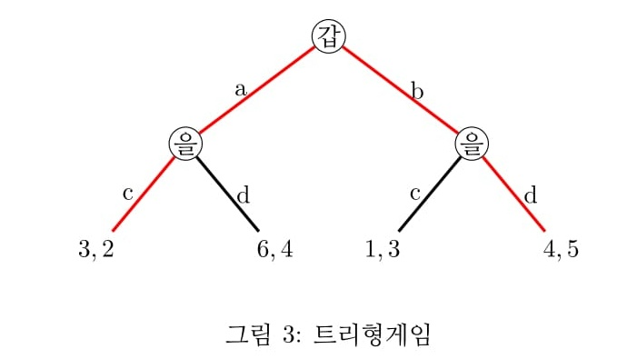

1. 동시게임
플레이어들이 동시에 의사결정을 하는 것을 동시게임이라 한다. 대표적인 것이 가위, 바위, 보 게임이다.
그런데 죄인들의 딜렘마 게임처럼 동시는 아니더라도 상황상 상대의 결정을 모르는 경우도 있다. 검사의 통제하에
갑과 을은 상대의 결정을 모르는 상태에서 각각 협조(C)할 것인지, 배신(D)할 것인지 결정해야 한다.
게임이론에서는 이 경우도 동시게임으로 본다.
2. 표형(table), 트리형(tree)
게임을 표시하는 방법에는 표형(전략형:normal form), 트리형(전개형:extensive form)의 두 가지가 있다.
양자는 서로 호환이 가능하며 그때 그때 분석의 편의를 위해 선택할 수 있다.
아래 <표1>은 표형으로 묘사된 죄인들의 딜렘마 게임이다. 회색으로 칠해진 부분이 내쉬균형이다.
이를 트리형으로 고치면 <그림1>과 같다. 갑이 C, D를 선택하고 을이 C, D를 선택하는데
을은 갑의 선택을 모른다. 이를 표시하기 위해 을의 양쪽 노드를 점선으로 연결한다.
점선으로 연결한 부분은 을이 왼쪽에 있는지, 오른쪽에 있는지를 모른다는 의미이다. 이 점선으로 연결한 부분을
게임이론에서 정보집합(information set)이라 부른다.
동시게임에서는 정보집합을 써서 동시성, 또는 모호성을 표현한다.
3. 순차적게임
<그림2>는 순차적 게임(sequential game)을 묘사한다. 갑이 먼저 선택을 한 후에 을이 선택한다. 교대로 플레이 하는 바둑, 장기와 같은 대다수 보드게임이 이에 해당한다.
갑이 a 또는 b 를 선택하면 을은 이를 보고 c 또는 d를 선택한다.
<그림1>과 다른 점은 을의 양쪽 노드간에 점선으로 연결되어 있지 않다는 점이다.
이는 을이 갑의 결정을 알 수 있음을 의미한다.
(1) 전략의 개념
순차적 게임에서는 전략의 설정에 주의해야 한다. 동시게임의 경우는 플레이어들이 동시에 선택을 하거나, 또는 상대방의 결정을 모르는 상태이므로 플레이어의 행동이 전략이 된다.
앞의 죄인들의 딜렘마 게임에서 갑의 전략은 C, D, 을의 전략은 C, D이다.
그러나 순차게임에서는 선행자의 모든 행동의 경우를 고려해서 자신의 행동계획을 결정하는 것이 전략(contingency plan)이 된다. 이러한 전략의 정의를 잘 이해하는 것이 향후 게임이론 이해에 매우 중요하다.
<그림2>의 예에서 갑의 전략은 a, b 두 가지다. 그러나 을의 전략은 갑의 모든 행동에 대한 나의 대응 행동이므로 을의 전략은 다음 네 가지가 된다.
i) 갑이 a를 선택하면 을은 c를 선택한다. 갑이 b를 선택하면 을은 c를 선택한다.
ii) 갑이 a를 선택하면 을은 c를 선택한다. 갑이 b를 선택하면 을은 d를 선택한다.
iii) 갑이 a를 선택하면 을은 d를 선택한다. 갑이 b를 선택하면 을은 c를 선택한다.
iv) 갑이 a를 선택하면 을은 d를 선택한다. 갑이 b를 선택하면 을은 d를 선택한다.
이로부터 게임표를 만들면 <표2>와 같다.
<표2>에서 내쉬균형은 회색으로 칠해진 부분 두 개이다. (갑:b, 을:a$\rightarrow$c, b$\rightarrow$d), (갑:a, 을:a$\rightarrow$d, b$\rightarrow$d)
전자의 균형에서 보수(효용)은 (4, 5), 후자의 균형에서의 보수는 (6, 4)이다.
(2) 균형경로 vs 비균형경로
첫번째 내쉬균형을 보자. 갑은 b를 선택하고, 을은 갑이 a를 선택하면 c를 선택하고 갑이 b를 선택하면 d를 선택하는 전략이 내쉬균형이다.
이를 그림으로 표현하면 <그림3>의 빨간색으로 그려진 부분이다. 전략의 정의상 두 개의 경로가 표현됐지만
실제의 선택 경로는 b$\rightarrow$d 임을 알 수 있다. 이를 내쉬균형상의 균형경로(on the equilibrium path)라 한다.
반대로 a$\rightarrow$c 같이 내쉬균형 전략의 일부이지만 도달하지 않는 경로를 비균형경로(off the equilibrium path)라 한다.

두번째 내쉬균형을 보자. 갑은 a를 선택하고, 을은 갑이 a를 선택하면 d를 선택하고 갑이 b를 선택하면 d를 선택하는 전략이 내쉬균형이다.
이는 <그림4>의 빨간색으로 그려진 부분이다. 전략의 정의상 두 개의 경로가 표현됐지만
실제의 선택 경로는 a$\rightarrow$d 임을 알 수 있다. 이것이 균형경로이다. b$\rightarrow$d 는 비균형경로이다.
이와 같이 순차게임에서는 경우의 수를 따지는 전략의 개념상 내쉬균형상의 균형경로와 비균형경로가
필히 발생한다. 게임이론에서는 게임적 상황이 복잡해질수록 복수의 내쉬균형이 발생하는 경우가 일반적이다.
학자들은 이들 여러 개의 내쉬균형 중에서 좀 더 합리적인
내쉬균형을 찾는 노력이 계속되어 왔는데 이를 내쉬균형의 정제(refinement)라 한다.
이와같은 방법 중에 부분게임완전균형, 완전베이지안균형, 직관적 기준에 의한 균형, 순방향추론법에 의한 균형 등 여러가지가 있는데
이들 방법 모두 내쉬균형 전략 중 비균형경로의 합리성을 요구하고 있다. 따라서 전략의 개념 및 이에서 파생되는
균형경로, 비균형경로의 개념을 잘 이해하고 있는 것이 향후 전개되는 게임이론의 이해에 매우 중요하다.
4. 부분게임 완전균형
<그림2>의 트리형 게임을 봤을 때 을의 선택이 하나의 작은 게임을 이룸을 알 수 있다.(물론 이 게임은 을이 혼자하는 게임이다.)
이 게임에서는 이와 같이 작은 게임이 두 개가 있다. 이 작은 게임을 부분게임(subgame)이라 한다.
<그림1>의 트리형 게임에서는 부분게임이 존재하지 않는다. 을의 노드가 점선, 즉 정보집합으로 연결되어 있으면 그 하위 가지는 부분게임으로 보지 않는다.
하위 가지 내부에서는 정보집합으로 연결되어 있어도 부분게임이 된다. 그러나 한 하위가지와 다른 하위가지간에 정보집합으로 연결되어 있으면 부분게임이 아니다.
첫번째 부분게임에서 을의 최선의 선택은 2와 4를 비교하여 d 이다. 두번째 부분게임에서 을의 최선의 선택은 3과 5를 비교하여 d 이다.
갑은 을이 자신의 차례에서 갑이 a를 선택할 때 d, 갑이 b를 선택할 때 d를 선택할 것이라고 예상할 수 있다.
이제 갑은 을의 이러한 선택을 예상하고 자신은 a 선택시 6과 b선택시 4를 비교하여 a를 선택한다.
즉 갑은 a를 선택하고 을은 d를 선택하는 것이 최선의 행동이 되는 것이다.
이는 앞의 내쉬균형 중 후자의 내쉬균형이고 이를 부분게임 완전균형(subgame perfect nash equilibrium)이라 한다.
전자의 균형이 왜 비합리적인지 보자. 전자의 내쉬균형의 비균형경로는 a$\rightarrow$c 이다.이는 비합리적이다. 갑이 a하면 을은
d가 최선이기 때문이다. 반면 후자의 내쉬균형의 비균형경로는 b$\rightarrow$d 이다. 갑이 b를 하면 을은 d를 선택하므로 이 경로는 합리적이다.
즉 후자의 내쉬균형은 비균형경로상의 비합리성이 없다.
부분게임 완전균형은 비균형경로상의 선택일지라도 합리적일 것을 요구한다. 이것이 후자가 부분게임완전균형이 되는 이유이다.